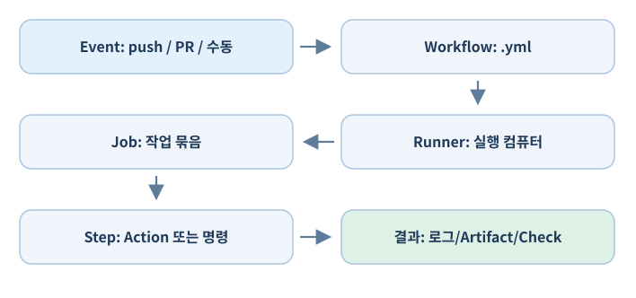

08. GitHub Actions 기초: 자동화가 어떻게 작동하는가?#
8.1 Actions는 별도 설치 프로그램이 아니다#
GitHub Actions는 저장소에서 발생하는 이벤트에 반응해 정의된 작업을 실행하는 GitHub 제공 자동화 서비스다. 일반적으로 웹의 Actions 탭에서 실행 결과를 확인하고 저장소의 .github/workflows/*.yml 파일로 실행 조건과 단계를 정의한다. 이 YAML 파일은 프로그램 설치 파일이 아니라 자동화 작업을 기술하는 설정 파일이다.

- Event:
push,pull_request,workflow_dispatch,schedule등 실행 트리거. - Workflow: YAML 파일 한 개가 정의하는 자동화 흐름.
- Job: Runner에서 실행되는 작업 묶음. 여러 Job은 병렬 실행 또는 의존성 연결이 가능하다.
- Step: Job 안에서 실행되는 명령 또는 재사용 Action.
- Action:
actions/checkout처럼 특정 기능을 수행하도록 포장된 재사용 단계. - Runner: 실제 명령이 실행되는 컴퓨터. GitHub-hosted 또는 Self-hosted로 구분한다.
- Artifact: 빌드 파일·테스트 보고서 등 실행 결과로 저장하는 파일 묶음.
- Cache: 재실행 시 속도를 높이기 위해 재사용하는 임시 데이터.
8.2 첫 실행: 수동 Hello Workflow#
저장소에 다음 파일을 작성한다: .github/workflows/hello.yml.
name: First Workflow
on:
workflow_dispatch:
permissions:
contents: read
jobs:
hello:
runs-on: ubuntu-latest
steps:
- name: Print message
run: echo "Hello from GitHub Actions"
on: workflow_dispatch이므로 수동 실행하도록 설정한 예시다. 파일을 기본 브랜치에 커밋·푸시한 뒤 GitHub 웹의 Actions → First Workflow → Run workflow에서 실행한다. 계정·저장소 설정에 따라 워크플로 목록이 나타나기까지 약간의 시간이 필요할 수 있다. 실행 항목을 열면 Job별 Step 로그를 볼 수 있다.
YAML 문법 YAML에서는 들여쓰기 수준이 데이터 구조다.
on,jobs는 최상위 키이고,steps는 특정 Job 아래에 있다. 탭 대신 공백을 사용한다. 또한 로컬 YAML 파서는on을 불리언으로 잘못 해석하는 구버전 YAML 1.1 규칙을 적용할 수 있다. GitHub Actions의 파싱 규칙과 같은 기준인지 확인해야 한다.
8.3 자주 사용하는 이벤트#
on:
push:
branches: [main]
pull_request:
branches: [main]
workflow_dispatch:
위 예시는 main으로 푸시되거나 main을 대상으로 PR이 생성/업데이트되거나 수동 실행될 때 실행한다. 실제 환경에서는 중복 실행과 빌드 비용이 생길 수 있으므로 필요한 이벤트만 선택한다.
paths 필터를 사용하면 특정 파일이 변경될 때만 실행할 수 있다. 다만 PR 병합을 요구하는 필수 Check를 경로 필터로 생략하면 검사가 대기 상태로 남는 등 정책 충돌이 발생할 수 있으므로 관련 문서를 확인한다.
8.4 Job, Step, 실행 순서#
name: Two jobs example
on:
workflow_dispatch:
permissions:
contents: read
jobs:
inspect:
runs-on: ubuntu-latest
steps:
- uses: actions/checkout@v4
- run: git status --short
report:
needs: inspect
runs-on: ubuntu-latest
steps:
- run: echo "Inspection finished"
needs: inspect는 선행 Job의 성공 이후 다음 Job을 실행하도록 연결한다. 각 GitHub-hosted Job은 별도 실행 환경에서 시작하므로 Job 간에 파일이 자동 공유되지 않는다. 필요한 결과 파일은 Artifact를 사용하거나 출력값을 전달한다.
8.5 uses와 run#
uses: 재사용 Action 호출. 예:actions/checkout@v4로 저장소 파일을 Runner에 가져온다.run: Runner의 셸에서 명령 실행. 예:dotnet test나python scripts/check.py.
외부에서 제공하는 Action을 사용하면 그 Action의 코드가 Runner에서 실행될 수 있다. 신뢰 가능한 게시자·버전·요구 권한을 확인하고, 실제 운영에서는 가능한 경우 전체 커밋 SHA 고정도 검토한다. 교재의 @v4 표기는 이해를 위한 간단한 예시이며 보안이 중요한 저장소에서는 더 엄격한 고정 정책을 권장한다.
8.6 환경 변수, Secrets, 권한#
permissions:
contents: read
jobs:
example:
runs-on: ubuntu-latest
env:
BUILD_CONFIGURATION: Development
steps:
- run: echo "$BUILD_CONFIGURATION"
워크플로에서 자격 증명이 필요하다면 Repository/Organization/Environment의 Secrets를 통해 전달하고, 필요 이상의 권한을 주지 않는다. GITHUB_TOKEN은 해당 워크플로에서 제공되는 토큰이며 설정된 권한으로 저장소 리소스에 접근할 수 있다. Projects GraphQL 조작은 일반 저장소 GITHUB_TOKEN만으로 접근할 수 없는 경우가 있다. 12장에서 권한이 제한된 GitHub App/PAT 방식을 별도로 설명한다.
중요한 보안 규칙:
pull_request와pull_request_target이벤트의 보안 의미를 혼동하지 않는다.- 신뢰하지 않는 PR 코드를 높은 권한의 토큰이나 비밀 값과 함께 실행하지 않는다.
- 출력 로그에 토큰, 라이선스 문자열, 고객 데이터가 남지 않게 한다.
- Workflow 권한을 최소화하고 외부 Action 업데이트를 검토한다.
- Self-hosted Runner에 실행되는 코드는 로컬 컴퓨터에 영향을 줄 수 있다는 점을 기억한다.
8.7 실행 로그·Cache·Artifact#
Log는 명령 실행 과정, 실패 원인, 테스트 출력 등을 확인하는 기본 정보다. Artifact는 사용자가 다운로드하는 테스트 보고서·게임 빌드·스크린샷 등을 보관한다. Cache는 반복 빌드 시간을 줄이는 용도이며 빌드 결과 보관소나 영구 백업으로 사용하지 않는다.
# 어느 Job의 steps에 추가할 수 있는 예시
- name: Upload test report
if: always()
uses: actions/upload-artifact@v4
with:
name: test-report
path: TestResults/
if-no-files-found: warn
위 블록은 단독 워크플로가 아니라 이미 존재하는 Job의 Step 일부다. if: always()는 앞 단계가 실패해도 가능한 한 보고서를 수집하도록 시도하며, 실제로 파일이 생성되지 않았다면 로그에서 확인해야 한다. 업로드되는 로그·보고서에 개인정보나 기밀이 없도록 주의한다.
8.8 GitHub-hosted와 Self-hosted Runner#
| 항목 | GitHub-hosted | Self-hosted |
|---|---|---|
| 환경 관리 | GitHub 제공 임시 환경 | 팀이 직접 설치·운영 |
| 설치된 소프트웨어 | 기본 도구 제공, Unity 등 추가 준비 | Unity 설치·캐시 유지 가능 |
| 비용 | 이용량·요금 정책 영향 | 하드웨어·전력·관리 비용 |
| 접근·보안 | 격리된 실행 환경, 정책 확인 | 내부망·로컬 머신 노출 위험 |
| 유지보수 | 상대적으로 적음 | OS·Runner·Unity 라이선스 관리 필요 |
Unity는 에디터 설치와 라이선스 활성화가 추가로 필요할 수 있어 초반에는 GitHub-hosted의 편의성과 실행 비용, Self-hosted의 로컬 환경 활용을 비교하자. 공개 저장소에서 출처를 알 수 없는 PR 코드를 Self-hosted Runner에서 실행하는 설계는 특히 조심해야 한다.
8.9 비용을 통제하는 습관#
- 모든 커밋마다 전체 Unity 빌드를 돌리기보다 PR에는 가벼운 검사, 정해진 시점에 전체 빌드를 분리한다.
- 저장소가 Private인지 Public인지, Runner OS/규격에 따라 요금·무료 할당량이 달라질 수 있다.
- 실행 취소·동시 실행 제한(
concurrency)을 이해한다. - 큰 Artifact의 보관 기간과 다운로드 필요성을 검토한다.
- 캐시가 실제로 시간을 줄이는지 측정한다. Unity Library 캐시는 용량·키 설계가 중요하다.
8.10 실습과 확인 기준#
- 수동 Hello 워크플로를 추가한다.
- 브라우저에서 실행해 성공 로그를 확인한다.
exit 1을 실행하도록 바꿔 실패 표시를 확인한다.push와workflow_dispatch의 차이를 실험한다.- Artifact 업로드를 시도해 보고 파일이 없을 때 어떤 경고가 뜨는지 살펴본다.
permissions가 필요한 이유를 설명한다.
확인할 결과: Workflow가 어떤 파일에 저장되고 언제·어느 머신에서 실행되며, 검사 결과와 산출물이 어디에 남는지 이해한다.
공식 자료: GitHub Actions, 이벤트, Workflow 문법, 보안
8.11 확장: Actions 워크플로의 실제 구조 읽기#
Actions 사용법은 YAML 문법을 외우는 것보다 왜 이 작업을 언제 누구의 권한으로 실행해야 하는지를 이해하는 것이 중요하다.
name: Repository checks
on:
pull_request:
branches: [main]
workflow_dispatch:
permissions:
contents: read
concurrency:
group: checks-${{ github.workflow }}-${{ github.ref }}
cancel-in-progress: true
jobs:
check-docs:
runs-on: ubuntu-latest
timeout-minutes: 10
steps:
- name: Checkout
uses: actions/checkout@v4
- name: Print event metadata
run: |
echo "Event: $GITHUB_EVENT_NAME"
echo "SHA: $GITHUB_SHA"
- name: Verify README exists
run: test -f README.md
이 코드는 실제 저장소에 적용할 수 있는 작은 검사 예제이며 Unity 게임을 빌드하지는 않는다. 코드를 적용하기 전 actions/checkout의 현재 지원 버전과 사용 정책을 최신 문서에서 확인해야 한다. 실제 프로젝트에서는 보안을 강화하기 위해 검토한 Action을 전체 커밋 SHA로 고정하는 방식도 고려한다.
on: 언제 실행하는가?permissions: 자동화가 저장소에 접근할 수 있는 최소 권한은 무엇인가?concurrency: 같은 PR에 새 커밋을 올렸을 때 오래된 검사를 취소할 것인가?timeout-minutes: 예상치 못한 무한 대기와 비용을 어떻게 제한할 것인가?uses: 미리 만들어진 Action을 호출한다.run: Runner의 셸에서 명령을 실행한다.
permissions 최소화#
GITHUB_TOKEN은 워크플로에 자동으로 제공될 수 있으며, Job/Workflow 수준에서 필요한 권한만 지정하는 것이 좋다. 문서 검사라면 contents: read처럼 제한한다. Issue 댓글 작성, Projects 필드 변경, 릴리스 업로드처럼 쓰기 작업이 필요한 경우에는 정확히 필요한 권한만 추가한다.
특히 외부 PR의 코드를 다루면서 Secrets가 들어 있는 높은 권한의 작업과 결합하는 것은 위험하다. pull_request_target 이벤트를 이용해 신뢰할 수 없는 PR 코드를 체크아웃하고 실행하는 패턴은 피하자. Actions 보안 가이드에서 권한과 이벤트의 차이를 확인한다.
8.12 Cache와 Artifact, 자동화 결과를 구분하기#
| 개념 | 저장되는 것 | 실무 예 |
|---|---|---|
| Cache | 다음 실행에서 재사용할 파일 | 종속성 캐시, 안정적으로 키가 지정된 라이브러리 |
| Artifact | 실행 결과를 다운로드·보관하기 위한 파일 | 테스트 결과 XML, 빌드 ZIP, 로그 |
| Release Asset | 사용자에게 제공하는 버전별 자산 | AsterArena-0.2.0-Windows.zip |
Unity의 Library 전체를 무조건 캐싱하면 큰 용량과 빈번한 무효화 때문에 오히려 비효율적일 수 있다. 실제 빌드 시간, 다운로드 시간, 캐시 크기를 측정한 뒤 도입한다.
테스트 로그를 Artifact로 남기는 형태#
- name: Upload test results
if: always()
uses: actions/upload-artifact@v4
with:
name: unity-test-results
path: test-results/
if-no-files-found: warn
retention-days: 7
위 예시는 그 전에 test-results/에 파일이 생성되었을 때 다운로드 가능한 형태로 올리는 Step이다. 테스트를 실제로 실행하는 Step은 별도로 필요하다. 실패한 테스트도 보고서를 남기려면 if: always() 같은 조건의 의미를 알아두면 좋다.
8.13 재사용 워크플로와 Matrix#
하나의 프로젝트에서 동일한 검사 코드를 여러 워크플로에 복사하지 않도록 workflow_call을 사용하는 재사용 워크플로를 검토할 수 있다. strategy.matrix를 활용하면 운영체제·구성·플랫폼 별 Job을 만들 수 있다.
다만 Windows·Linux에서 Unity를 모두 빌드하도록 Matrix를 구성하기 전에 실제로 해당 OS에서 엔진과 라이선스, 플랫폼 모듈을 준비할 수 있는지 먼저 확인해야 한다. 특히 Unity의 플랫폼별 빌드 목표는 -buildTarget 등으로 명확히 지정해야 한다.
초기 3~5인 팀은 하나의 플랫폼, 하나의 안정적인 빌드 스크립트부터 시작하는 것이 좋아.
8.14 배포 승인과 Environments#
GitHub Actions의 Environments는 배포 환경별 비밀값과 승인 규칙을 구성하는 데 사용할 수 있다. 예를 들어 playtest와 production을 구분해, 정식 릴리스는 담당자 검토 뒤 실행하도록 설계할 수 있다. 다만 보호 규칙 등의 이용 가능 범위는 플랜·저장소 설정에 따라 다르다.
게임 개발에서 중요한 구분:
- 빌드 성공: 명령이 종료되고 필요한 산출물이 생성됨.
- 테스트 성공: 설정된 자동 테스트가 통과함.
- 출시 승인: 실제 플레이, 세이브 호환성, 성능, 법적·스토어 요구를 사람이 확인함.
세 가지는 서로 자동으로 따라오지 않는다.
8.15 대표 실패 원인과 조치#
| 증상 | 우선 확인 |
|---|---|
| Workflow가 목록에 없음 | 파일이 기본 브랜치의 .github/workflows/*.yml에 있는가? YAML 문법은 맞는가? |
| 실행은 되는데 예상 Job이 없음 | on, if, 브랜치 필터, paths 조건 |
Resource not accessible by integration |
GITHUB_TOKEN 권한·이벤트 신뢰 수준 |
| Artifact가 없음 | 파일 경로, 파일 생성 시점, if-no-files-found |
| 매번 오래된 실행이 누적됨 | concurrency 설계, 과도한 트리거 |
| 사용량이 증가함 | 실행 빈도, OS별 Runner 비용, 캐시/Artifact 보관 정책 |
실습: 위 Repository checks 파일을 테스트 저장소에 넣고 PR을 만들고, README.md 이름을 잠시 변경하여 실패를 재현한 뒤 다시 원상복구한다. 실패한 실행의 Job·Step·로그 위치를 찾을 수 있으면 첫 단계 완료다.
공식 자료: Workflow syntax · 권한 · Concurrency · 재사용 워크플로